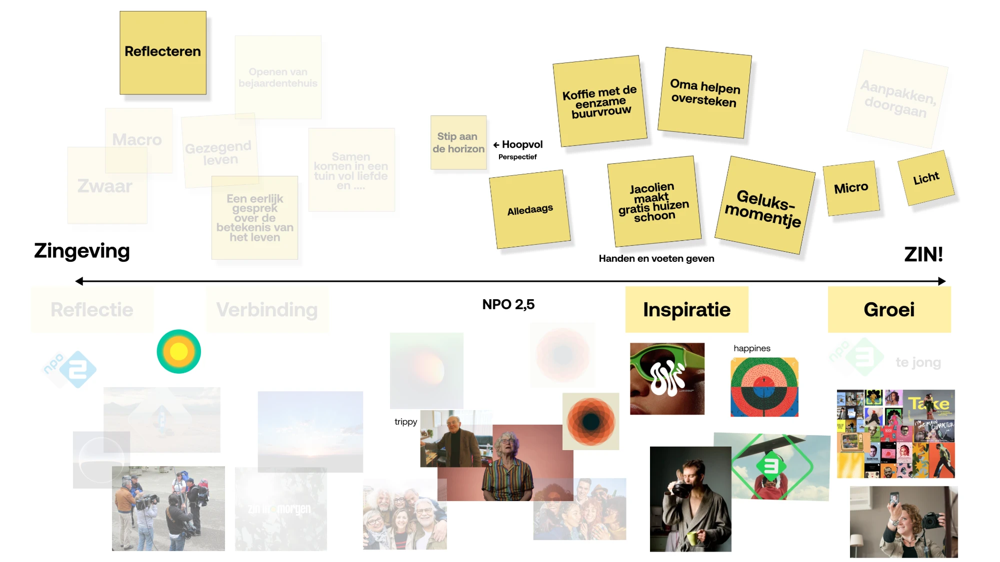
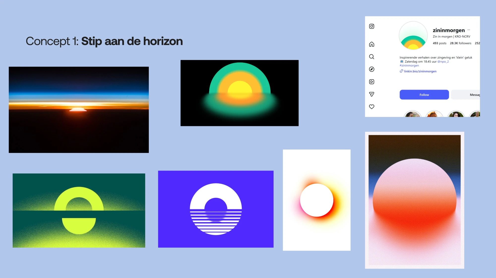
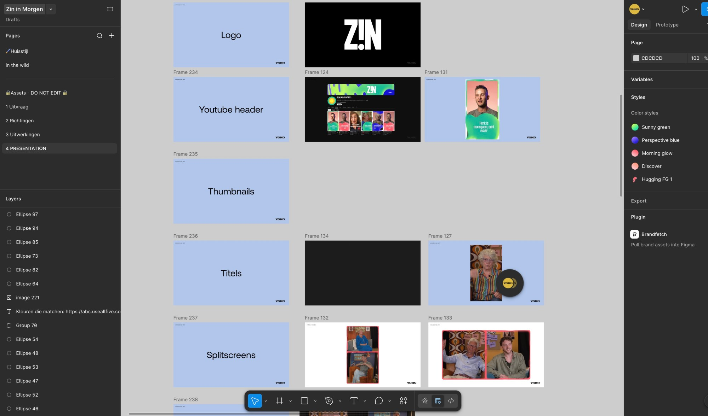
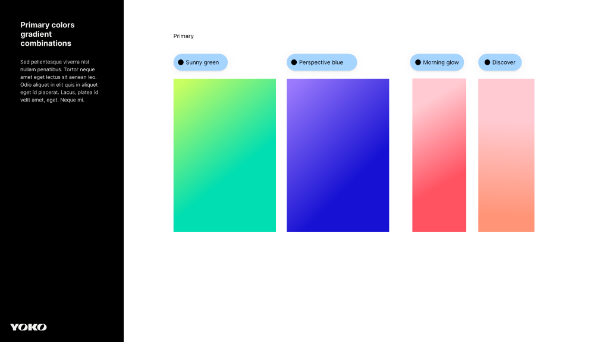
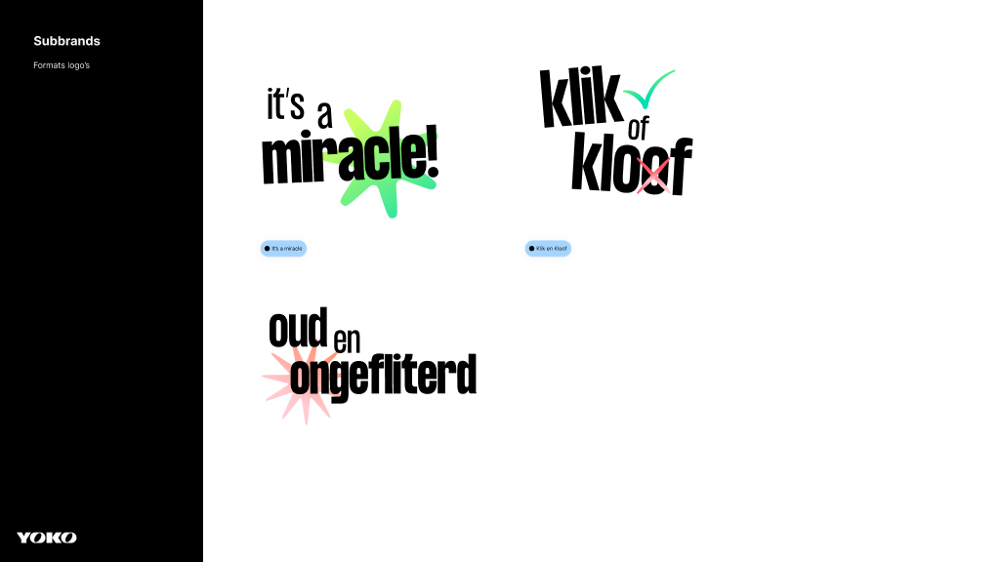
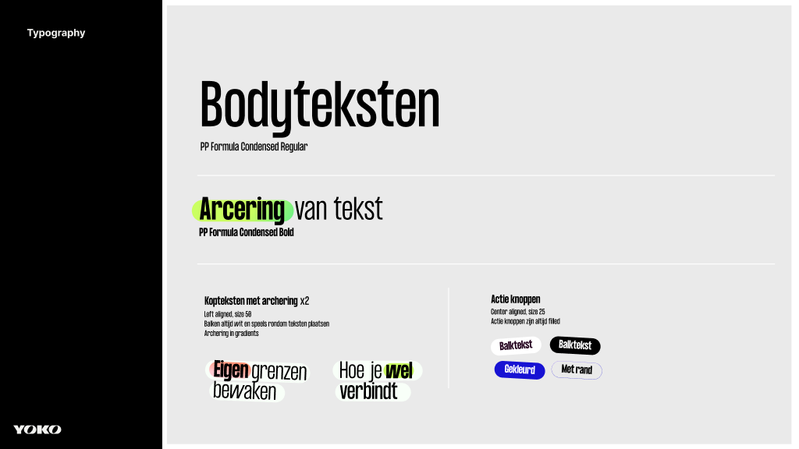

01
Uitvraag
Via vragen en voorbeelden legden we samen de voorkeur vast op een matrix. Zwaar of licht? Zingeving of ZIN? Het gesprek bracht meer op dan de antwoorden.


KRO-NCRV · Merkidentiteit
Voor KRO-NCRV helpen we Zin in Morgen vormgeven voor social. Niet door de tv-identiteit simpelweg door te vertalen, maar door opnieuw te bepalen waar het merk voor staat.
Zin in Morgen was een televisieprogramma over zingeving. Met de overstap naar social wilde het team een jonger en breder publiek bereiken, zonder de inhoudelijke kern kwijt te raken.
De vraag was dus groter dan hoe het merk eruit moest zien op Instagram of TikTok: wat is ZIN! als televisie niet langer het vertrekpunt is?
We zagen dat de verandering van medium ook ruimte gaf om het merk zelf te verbreden.
Het bestaande Zin in Morgen zat sterk aan de kant van zingeving: reflectie, betekenis en verdieping. Op social mocht daar meer zin in het leven tegenover staan: energie, plezier en het alledaagse.
Juist de ruimte tussen die twee bleek interessant. Niet oppervlakkig, maar ook niet altijd zwaar.
Daarom begonnen we niet met vormgeven.
Met gesprekken, voorbeelden, moodboards en een positioneringsmatrix maakten we eerst verschillende richtingen zichtbaar. Zo kon het team niet alleen zeggen wat het mooi vond, maar vooral: dit zijn wij wel — en dit niet.
Vanuit twee visuele richtingen werkten we toe naar één identiteit die inhoudelijke verdieping én lichtheid kon dragen.
Binnen twee weken vertaalden we die richting naar een complete social branding: typografie, kleur, grafische principes, motion en toepassingen voor verschillende soorten content.
Geen televisiehuisstijl voor een kleiner scherm, maar een flexibel systeem dat vanaf het begin voor social is ontworpen.
Via vragen en voorbeelden legden we samen de voorkeur vast op een matrix. Zwaar of licht? Zingeving of ZIN? Het gesprek bracht meer op dan de antwoorden.

Twee uitwerkingen dwongen een keuze. Niet alleen moodboards — ook concrete uitingen. Zo voel je welke kant het op gaat, niet alleen zie je het.

De gekozen richting werd concreet. Huisstijl, kleur, typografie en templates — vastgelegd in een systeem dat de redactie zelf kan bedienen.

De overstap naar social werd daarmee ook een moment om opnieuw scherp te krijgen waar ZIN! voor staat.
De nieuwe identiteit geeft de redactie een herkenbare basis, met genoeg ruimte voor verschillende onderwerpen, makers en verhalen.
Van een tv-programma over zingeving naar een social merk met ruimte voor zingeving én zin in het leven.







